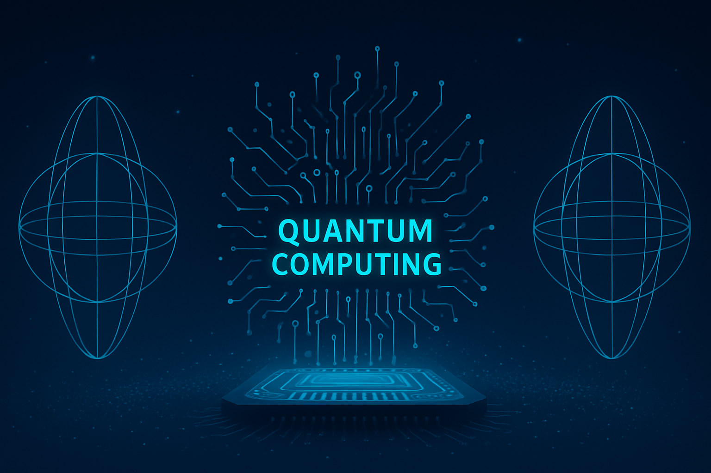
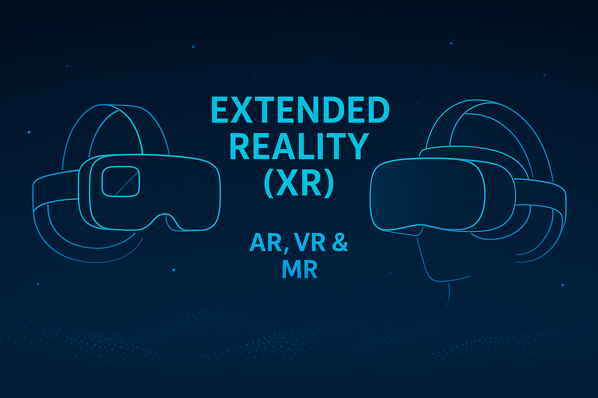

Artificial Intelligence (AI) and Generative AI

In 2025, Artificial Intelligence (AI) continues to dominate as one of the most transformative technologies. With advancements in Generative AI, machines are now capable of creating human-like text, images, code, and even videos. Tools like ChatGPT and DALL·E are being used in customer service, marketing, education, and healthcare. AI is improving decision-making, automating routine tasks, and enabling personalized user experiences across industries.
Quantum Computing
Quantum Computing is another emerging field gaining momentum. Unlike traditional computers, quantum computers use qubits that can perform complex calculations at unimaginable speeds. Though still in developmental stages, they are showing potential in solving problems in drug discovery, cybersecurity, climate modeling, and financial analysis. Leading tech companies and governments are investing heavily in making quantum technology more stable and commercially viable.
Extended Reality (XR): AR, VR & MR
Extended Reality (XR), which includes Augmented Reality (AR), Virtual Reality (VR), and Mixed Reality (MR), is changing how people interact with digital environments. In 2025, XR is widely used not only in gaming but also in education, healthcare, real estate, and virtual meetings. With devices like Apple Vision Pro and Meta Quest, users can experience immersive environments for learning, collaboration, and entertainment.
Sustainable and Green Technologies
With rising concerns about the environment, Green and Sustainable Technologies are rapidly emerging. Technologies focused on clean energy, such as electric vehicles, solar panels, wind energy, and green hydrogen, are being adopted at large scale. Innovations in biodegradable packaging, smart grids, and energy-efficient systems are helping reduce carbon footprints and fight climate change, making sustainability a key focus for industries and governments.
Biotechnology and Genomics
Biotechnology and Genomics are revolutionizing healthcare and agriculture. With gene-editing tools like CRISPR and advanced DNA sequencing, scientists can now develop personalized medicines, genetically modified crops, and synthetic vaccines. In 2025, biotech is playing a vital role in disease prevention, food security, and even anti-aging research, making it one of the most impactful technologies of the decade.